→Two claws that make an egg. Solo show by Ariadna Guiteras at Dilalica. Barcelona. September-November 2022
Since Ariadna Guiteras became a mother, the IG algorithm shows her construction games for building children’s forts. Inspired by those games, Two Claws That Make an Egg is based on a modular structure that can convert into both a refuge and a trap. This structure – that is simultaneously both house and body – is topped by a patchwork fabric roof made of second-hand clothing. This Frankenstein covering is sewn according to traditional patchwork patterns and transforms the clothing (which formerly protected a single body) into a collective coat made of many scraps, generating a tense coexistence of the violence of cutting and the tenderness of mending.
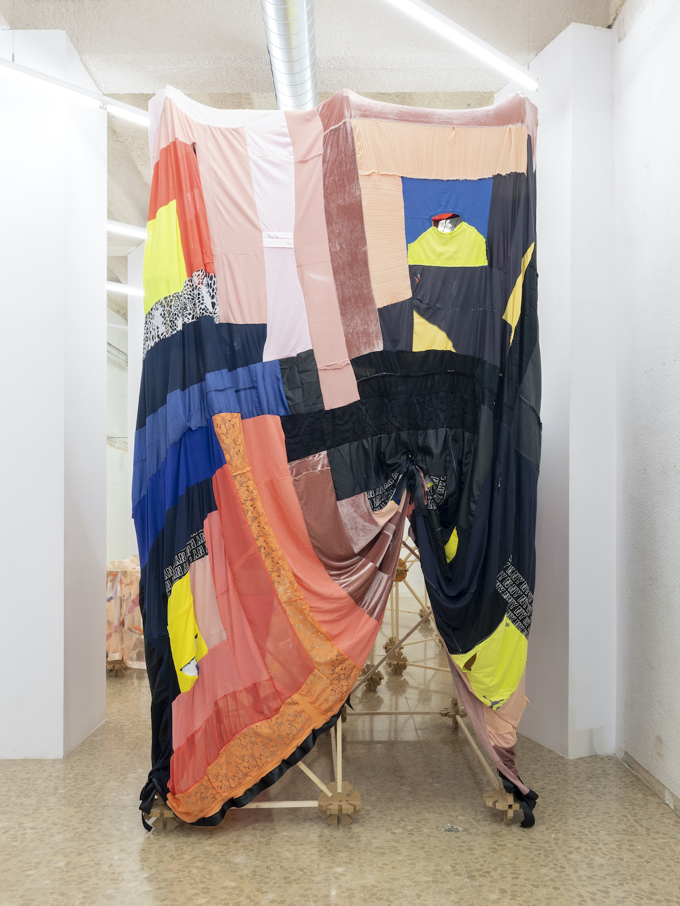 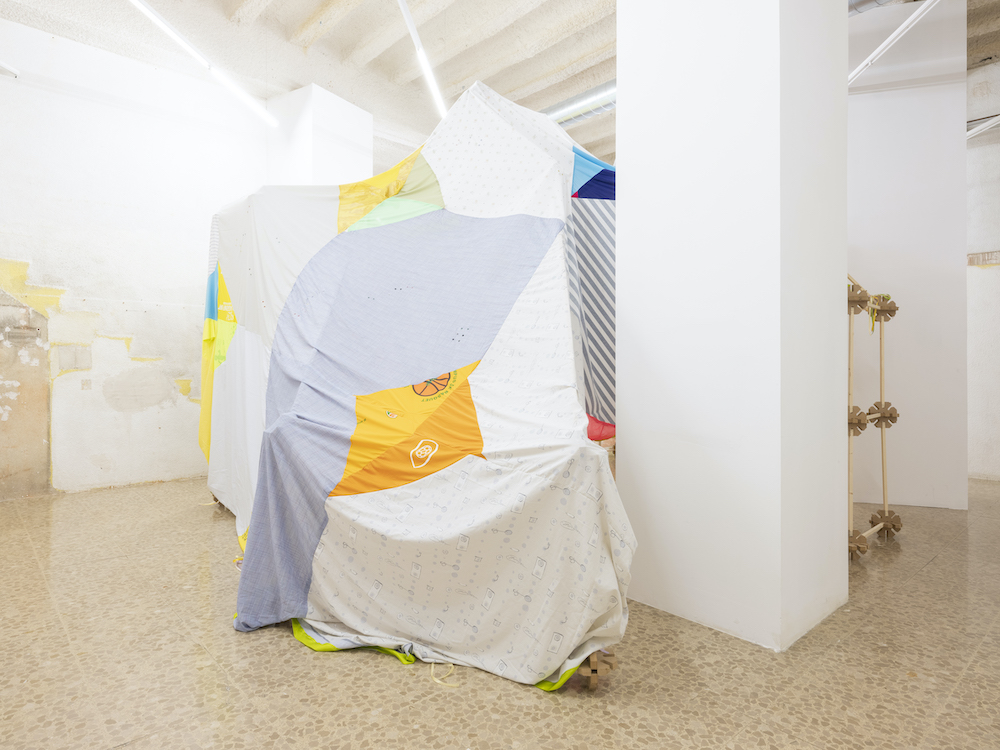 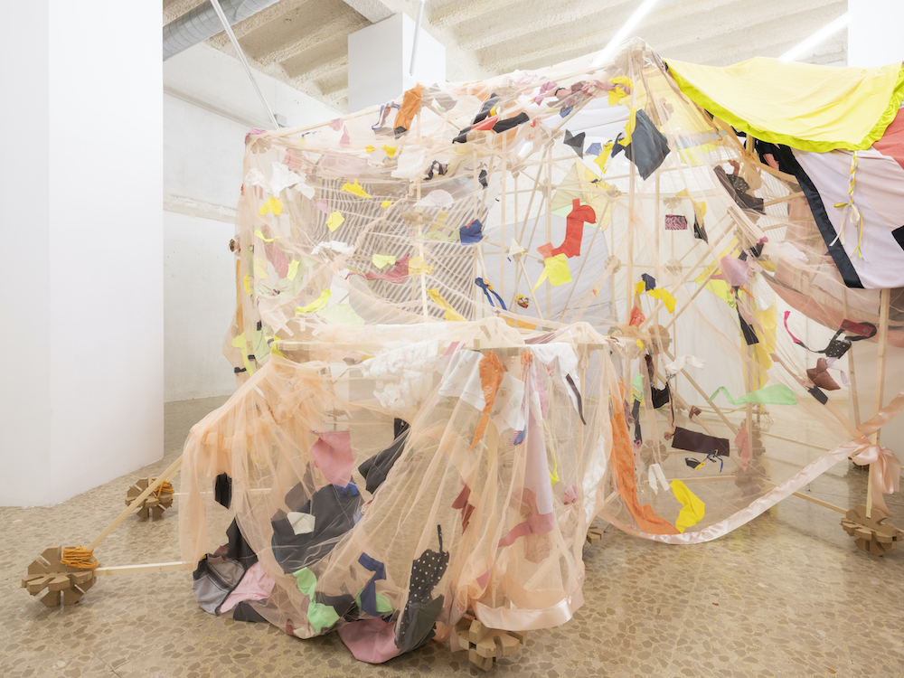 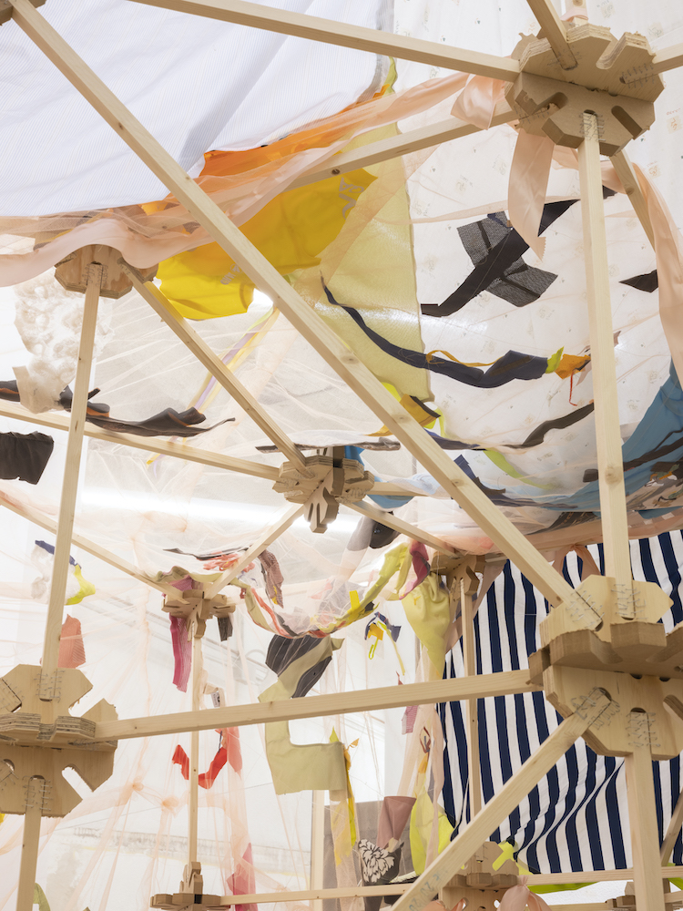
→Cuerpo y Ficción. Galería del Tossal, València, 2022.
Moving away from an anthropocentic view, a reflection around the body’s queer potential using a diverse range of materials. The exhibit explores the gap between reality and posibility. Group exhibit with works by Cabello/Carceller, Lucía C. Pino, Ariadna Guiteras, and M Reme.
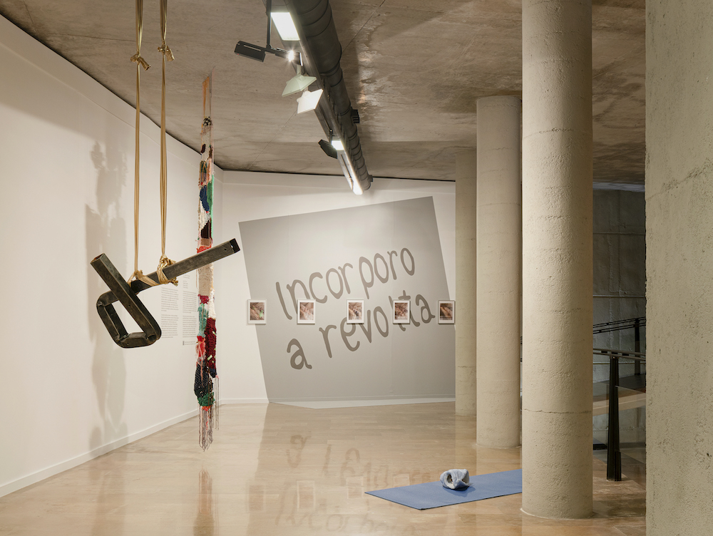 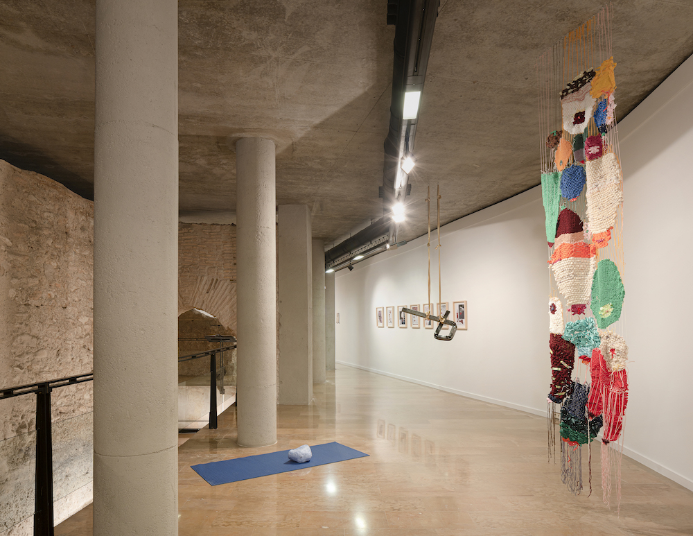→Al Alcance. Dilalica. Barcelona, 2022
In Al Alcance artists Elena Aitzkoa, Ester Gatón, Michael Lawton and Mercedes Mangrané are showing works made through processes that have to do with layering, construction/destruction, and repurposing of common materials. Scale in relationship to the body and to the spaces it ocupies are at the center of this dialogue.
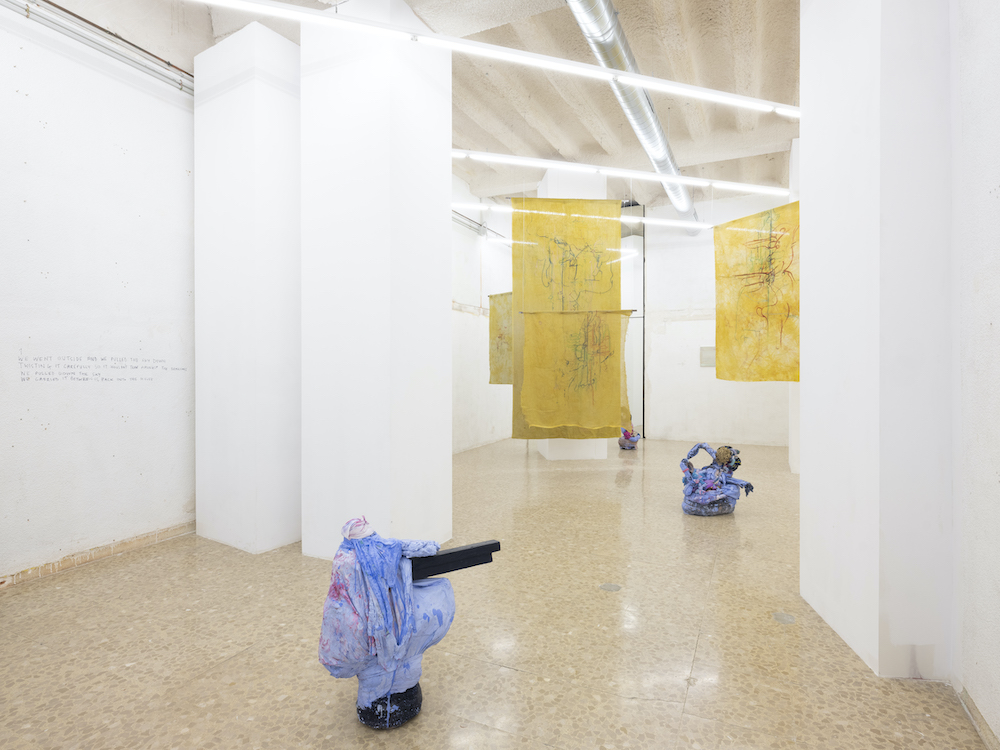 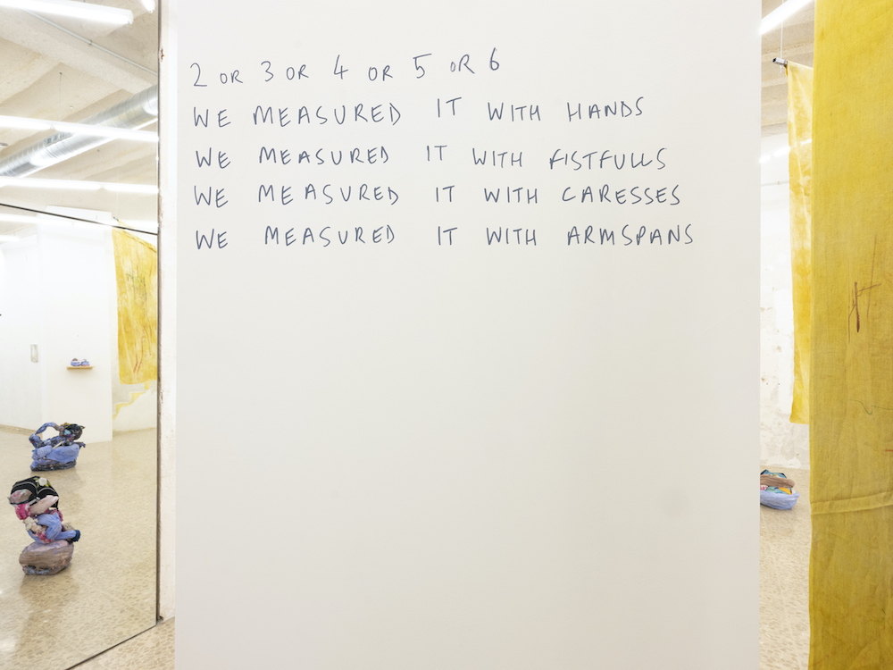 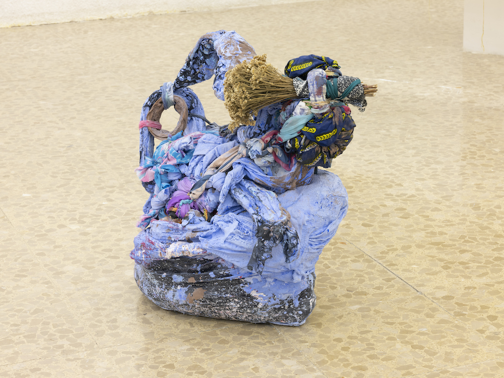 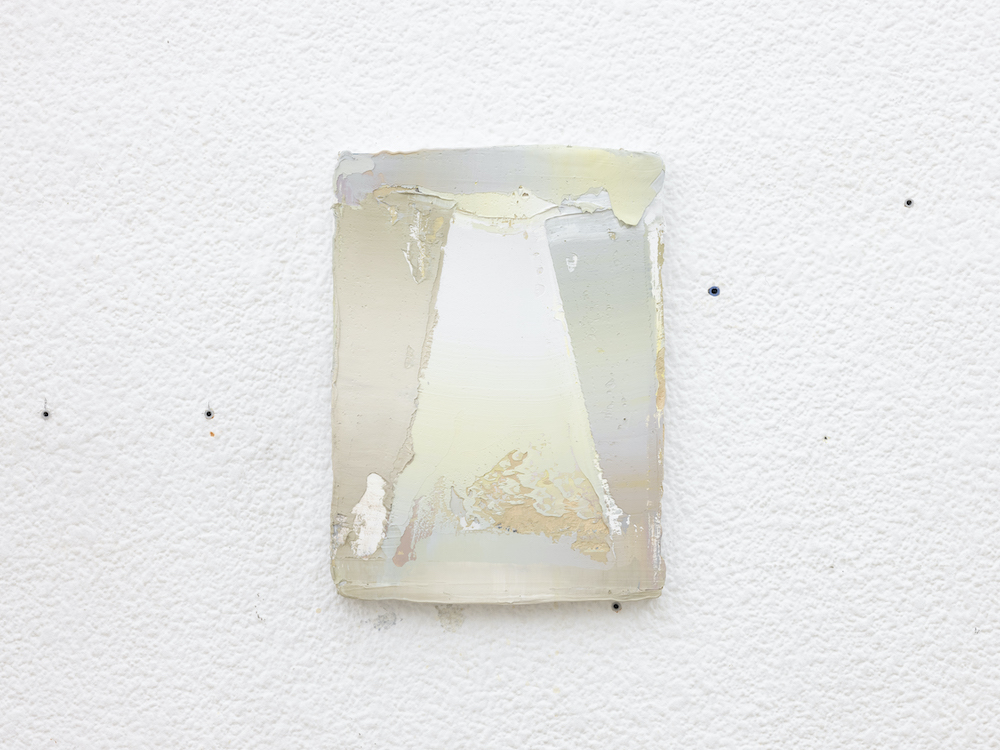→That. Instituto Cervantes, New York, 2022
Six artists, repurpose, rethink and amplify the deceiving banality of everyday household things.
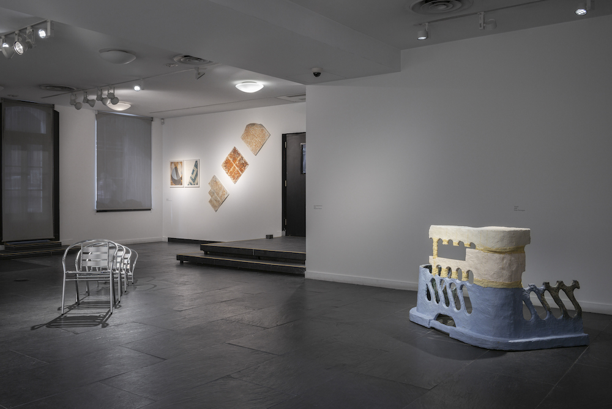 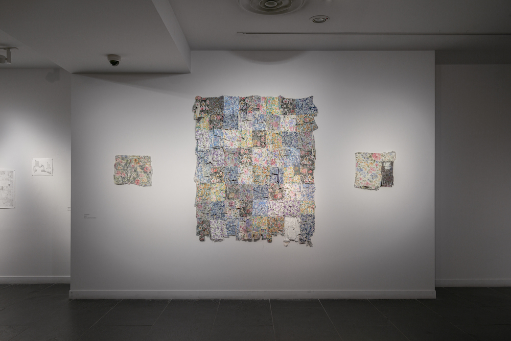→Oficina. Dialica, Barcelona, 2021
→Los Dalton. Dialica, Barcelona, 2021
→Postcrisis. Centro de Arte Conde Duque, Madrid, 2020
→Archivo Rastro. C Arte C, Madrid, 2020